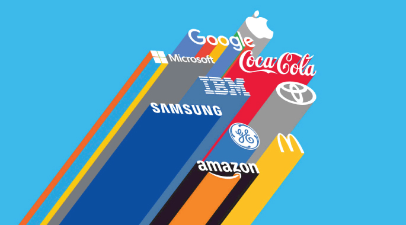

Inteligencia artificial
-Conceptos básicos
La inteligencia artificial es un campo de la informática que se enfoca en crear sistemas que puedan realizar tareas que normalmente requieren inteligencia humana, como el aprendizaje, el razonamiento y la percepción
Más InformaciónTipos
- Inteligencia Artificial Estrecha (ANI): Inflexible y se enfoca en un trabajo único.
- Inteligencia Artificial General (AGI): Capaz de razonar y aprender como un ser humano.
- Superinteligencia Artificial (ASI): Más allá de la inteligencia humana.
- Máquinas Reactivas: No tienen memoria ni aprendizaje.
- Memoria Limitada: Aprende de experiencias pasadas o datos históricos.
- Teoría de la Mente: Capacidad de comprender las intenciones de otros.
- Autoconciencia: Conciencia de sí misma.
¿Dónde se aplica?
La inteligencia artificial (IA) se aplica en muchos campos, como el comercio, la medicina, la ingeniería, el transporte, las comunicaciones y la milicia, etc.
Compras por internet y publicidad: La inteligencia artificial se usa mucho para crear recomendaciones personalizadas para los consumidores, basadas en sus búsquedas y compras previas o en otros comportamientos en línea. La IA es muy importante en el comercio, para optimizar los productos, planear el inventario, procesos logísticos, etc.
Búsquedas en la web Los motores de búsqueda aprenden de la gran cantidad de datos que proporcionan sus usuarios para ofrecer resultados de búsqueda relevantes. Asistentes personales digitales Los teléfonos móviles smartphones usan la IA para un producto lo más relevante y personalizado posible. Los asistentes virtuales responden preguntas, dan recomendaciones y ayudan a organizar rutinas.
Traducciones automáticas Los programas de traducción de idiomas, basados en texto escrito u oral, recurren a la IA para mejorar las traducciones. También se aplica al subtitulado automático. Casas, ciudades e infraestructuras inteligentes Los termostatos inteligentes aprenden de nuestro comportamiento para ahorrar energía, mientras que las ciudades inteligentes regulan el tráfico para mejorar la conectividad.
Nosotros
Somos un equipo de gente apasionada cuya meta es mejorar la vida de
cada uno a través de productos disruptivos. Construimos grandes productos para solucionar sus problemas de
negocio. Nuestros productos están diseñados para pequeñas y medianas empresas que desean
optimizar su desempeño. En el último tiempo integramos a la inteligencia artificial (IA)
en nuestro sistema de gestión para luego implementar en los sistemas de nuestros
clientes. Un ejemplo de ello es el asistente virtual de whatsapp.
Además contamos con el sector de ventas de insumos, hadware y software
Más Información
Apoyos
Empresas que trabajan con nosotros
